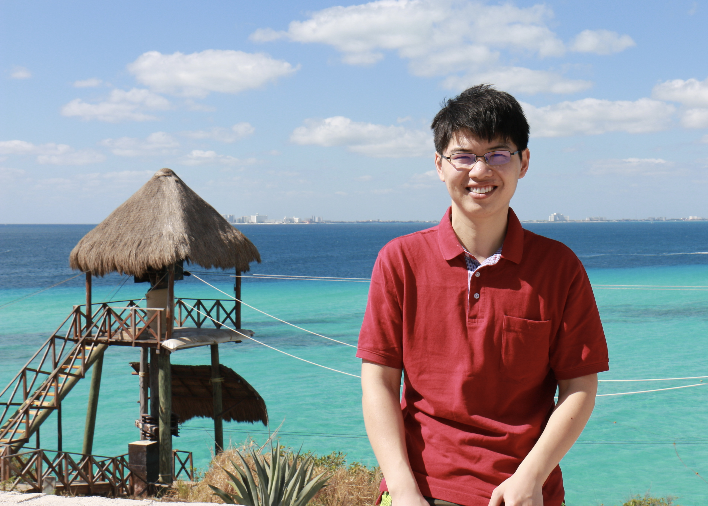

|

|
I am an assistant professor in the Department of Statistics at the University of Chicago.
Previously, I was a postdoctoral researcher at UC Berkeley, advised by Professor Martin Wainwright. I obtained my Ph.D. at Princeton University in 2020, advised by Professor Yuxin Chen and Professor Jianqing Fan. Prior to the graduate school, I received my bachelor's degree in Electrical Engineering from Tsinghua University in 2015.
I am broadly interested in mathematics of data science with a current focus on reinforcement learning, transfer learning, multi-modal learning, high-dimensional statistics, and nonconvex optimization.
|